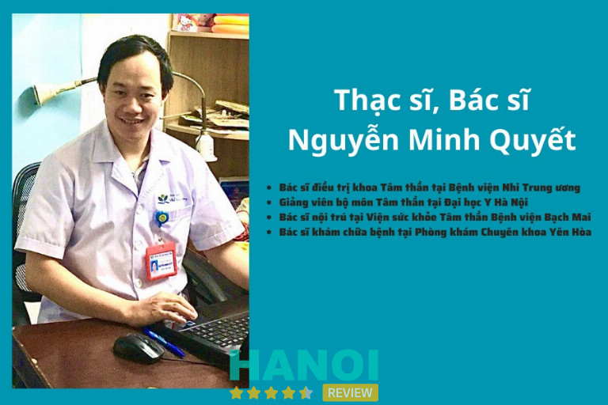

10 Chuyên gia tâm lý ở Hà Nội uy tín giúp bạn lấy lại cân bằng cuộc sống
Tìm Chuyên gia tâm lý ở Hà Nội là nhu cầu ngày càng phổ biến trong xã hội hiện đại. Với nhịp sống nhanh và áp lực công việc, nhiều người cần đến sự hỗ trợ từ chuyên gia tâm lý để tìm lại sự bình an, cải thiện tinh thần và chất lượng cuộc sống.
Top 10 Chuyên gia tâm lý tại Hà Nội được nhiều người tin tưởng
Danh sách các chuyên gia tâm lý ở Hà Nội dưới đây mang đến cho bạn những địa chỉ uy tín, giúp giải tỏa căng thẳng, cải thiện sức khỏe tinh thần và nâng cao chất lượng cuộc sống.
Chuyên gia tâm lý Bùi Thị Hải Yến – Trung tâm Tâm lý và Phát triển Con người NHC Việt Nam
Chuyên gia Tâm lý Bùi Thị Hải Yến là người sáng lập và điều hành Trung tâm Tâm lý và Phát triển Con người NHC Việt Nam, nơi cô đã đóng góp không nhỏ vào việc nâng cao chất lượng chăm sóc sức khỏe tinh thần tại Việt Nam. Với nền tảng vững chắc về học vấn và kinh nghiệm, cô đã chứng minh được sự uy tín và chuyên môn trong lĩnh vực tư vấn tâm lý.
Chuyên gia Bùi Thị Hải Yến sở hữu Cử nhân Tài chính – Kế toán từ Đại học Thương Mại và Thạc sĩ Kinh tế từ Học viện Tài chính, nhưng niềm đam mê với tâm lý học đã dẫn dắt cô đến con đường nghiên cứu và thực hành trong lĩnh vực chăm sóc sức khỏe tinh thần. Cô đã hoàn thành các chương trình đào tạo chuyên sâu về NLP, thôi miên trị liệu và Energy Healing (Reiki), cùng nhiều chứng chỉ quốc tế khác trong các lĩnh vực như dòng thời gian (Time Line), ngôn ngữ lập trình tư duy. Những kiến thức này đã giúp cô xây dựng phương pháp hỗ trợ tâm lý khoa học, hiệu quả và phù hợp với nhu cầu của từng cá nhân.
Với hơn một thập kỷ hoạt động trong lĩnh vực tâm lý học, Chuyên gia Bùi Thị Hải Yến đã giúp hàng nghìn khách hàng vượt qua các vấn đề tâm lý như trầm cảm, lo âu, và rối loạn cảm xúc. Cô luôn ưu tiên áp dụng các phương pháp hỗ trợ không dùng thuốc, không xâm lấn cơ thể, giúp khách hàng phục hồi tự nhiên và bền vững. Các giải thưởng danh giá như Giải thưởng “Doanh nhân xuất sắc Đất Việt” năm 2021 và Giải thưởng “Nhà lãnh đạo xuất sắc ASEAN” năm 2022 chính là minh chứng cho rõ nét nhất cho những đóng góp quan trọng của Chuyên gia Tâm lý Bùi Thị Hải Yến trong lĩnh vực này.
Thế mạnh chuyên môn của Chuyên gia tâm lý Bùi Thị Hải Yến:
- Hỗ trợ tham vấn tâm lý.
- Hỗ trợ vượt qua trầm cảm, rối loạn lo âu, rối loạn cảm xúc.
- Hỗ trợ giải quyết tình trạng mất ngủ và căng thẳng, stress kéo dài.
- Hỗ trợ tham vấn, gỡ rối tâm lý học đường.
- Hỗ trợ gỡ rối tâm lý, tìm điểm cân bằng trong cuộc sống.
- Hỗ trợ đồng hành vượt qua các mâu thuẫn để hòa hợp mối quan hệ.
>> Chuyên gia Tâm lý Bùi Thị Hải Yến chia sẻ cách vượt qua ám ảnh lo âu sợ hãi và trầm cảm ở giới trẻ:
Lợi ích khi đồng hành cùng Chuyên gia Tâm lý Bùi Thị Hải Yến:
- Giải quyết tận gốc các vấn đề tâm lý: Chuyên gia Bùi Thị Hải Yến tập trung vào việc tìm ra nguyên nhân sâu xa gây ra các vấn đề như trầm cảm và lo âu, giúp khôi phục trạng thái tinh thần ổn định từ gốc rễ.
- An toàn tuyệt đối: Với kinh nghiệm làm việc cùng các đối tượng đa dạng như trẻ vị thành niên, phụ nữ mang thai hay đang cho con bú, phương pháp của cô luôn đảm bảo tính an toàn và hiệu quả cho từng cá nhân.
- Đồng hành lâu dài và liên tục: Coach Hải Yến luôn sẵn sàng hỗ trợ khách hàng 24/7, không chỉ trong thời gian đồng hành mà còn trong quá trình duy trì sự cân bằng, ổn định cuộc sống sau đó.
- Minh bạch về kết quả: Các giải pháp hỗ trợ tâm lý của chuyên gia đều rõ ràng và minh bạch về kết quả. Chính sách hoàn chi phí của cô được thể hiện cụ thể và cam kết bằng văn bản, mang lại sự tin tưởng và an tâm cho khách hàng.
Nếu bạn đang gặp khó khăn về mặt tinh thần và tìm kiếm sự hỗ trợ từ một chuyên gia uy tín, Chuyên gia Tâm lý Bùi Thị Hải Yến chính là lựa chọn hoàn hảo. Với kiến thức chuyên sâu, kinh nghiệm dày dặn và phương pháp hỗ trợ khoa học, cô luôn sẵn sàng giúp bạn vượt qua những khó khăn tâm lý, hướng tới một cuộc sống hạnh phúc và bình an hơn.
Thông tin liên hệ:
- Địa chỉ: 37 Thâm Tâm, Phường Yên Hòa, TP. Hà Nội
- Điện thoại: 0965 898 008
- Website: https://tamlynhc.vn
- Fanpage: FB.com/tamlytrilieunhc
- Email: tamlyphattriennhc@gmail.com
PGS. TS. BS Trần Hữu Bình – BV Bạch Mai
PGS. TS. BS Trần Hữu Bình được biết đến là bác sĩ chuyên khoa tâm thần ở Hà Nội hàng đầu, nguyên Viện trưởng Viện Sức khỏe Tâm thần Quốc gia – Bệnh viện Bạch Mai.
Với hơn 30 năm kinh nghiệm trong lĩnh vực tâm thần học, ông là người đã góp phần to lớn trong việc phát triển chuyên ngành Tâm lý – Tâm thần tại Việt Nam. Uy tín của ông được khẳng định không chỉ qua hàng nghìn ca điều trị thành công mà còn bởi hàng chục công trình nghiên cứu khoa học có giá trị thực tiễn cao.
Với chuyên môn sâu rộng, PGS. TS. BS Trần Hữu Bình tập trung điều trị hiệu quả các rối loạn tâm lý phổ biến như:
-
-
- Trầm cảm, rối loạn lo âu, rối loạn cảm xúc
- Mất ngủ kinh niên, stress nghề nghiệp
- Rối loạn thích nghi, rối loạn tâm lý ở nam giới trưởng thành
- Tư vấn, trị liệu tâm lý cho người gặp khủng hoảng cảm xúc
-
Điểm nổi bật của bác sĩ là sự kết hợp hài hòa giữa liệu pháp tâm lý hiện đại và phương pháp y học lâm sàng, mang lại hiệu quả điều trị toàn diện. Cách tiếp cận của ông chú trọng vào việc thấu hiểu nguyên nhân gốc rễ của vấn đề, giúp bệnh nhân phục hồi tinh thần bền vững và tìm lại cân bằng trong cuộc sống.
Là một trong những bác sĩ chuyên khoa tâm thần ở Hà Nội có chuyên môn cao và được nhiều người tin tưởng, PGS. TS. BS Trần Hữu Bình luôn là lựa chọn hàng đầu cho những ai cần tìm đến sự trợ giúp chuyên nghiệp về sức khỏe tinh thần.
Thông tin liên hệ:
-
-
- Địa chỉ: 78 Giải Phóng, P. Kim Liên, Hà Nội
- Điện thoại: 1900 888 866
- Email: congvandenctxh@gmail.com
- Website: bachmai.gov.vn
- Facebook: fb.com/benhvienbachmai1911
-
TS.BS. Trần Thị Hà An – BV Bạch Mai
TS. BS Trần Thị Hà An là một trong những chuyên gia đầu ngành trong lĩnh vực tâm lý – tâm thần tại Hà Nội, hiện đang giữ vai trò Phó Viện trưởng Viện Sức khỏe Tâm thần Quốc gia, Bệnh viện Bạch Mai.
Với nhiều năm kinh nghiệm nghiên cứu và điều trị lâm sàng, bác sĩ Hà An được đánh giá cao về chuyên môn, luôn đi đầu trong việc cập nhật các phương pháp điều trị hiện đại, mang lại hiệu quả tích cực cho người bệnh.
Bác sĩ tập trung thăm khám và điều trị chuyên sâu các rối loạn tâm lý, trầm cảm, rối loạn lo âu, rối loạn cảm xúc, stress kéo dài, giúp bệnh nhân lấy lại sự cân bằng tinh thần và chất lượng cuộc sống. Với phong cách làm việc tận tâm, tỉ mỉ và thái độ nhẹ nhàng, TS. BS Trần Thị Hà An luôn tạo cảm giác tin tưởng và an tâm cho người đến khám.
Các lĩnh vực chuyên môn nổi bật:
-
-
- Chẩn đoán và điều trị trầm cảm, rối loạn lo âu.
- Hỗ trợ tâm lý cho người bị stress nghề nghiệp, học tập.
- Liệu pháp kết hợp y học – tâm lý cho bệnh nhân mãn tính.
- Tư vấn phục hồi cảm xúc sau sang chấn tâm lý.
-
Với kiến thức sâu rộng và vị trí lãnh đạo tại Viện Sức khỏe Tâm thần Quốc gia, TS. BS Trần Thị Hà An luôn được xem là địa chỉ tin cậy cho những ai đang tìm kiếm sự hỗ trợ về sức khỏe tâm thần tại Hà Nội. Lựa chọn bác sĩ Hà An là lựa chọn hướng đến sự an yên và hồi phục toàn diện về tinh thần.
Thông tin liên hệ:
-
-
- Địa chỉ: 78 Giải Phóng, P. Kim Liên, Hà Nội
- Điện thoại: 1900 888 866
- Email: congvandenctxh@gmail.com
- Website: bachmai.gov.vn
- Facebook: fb.com/benhvienbachmai1911
-
GỢI Ý: 10 Phòng khám mắt tại Hà Nội bác sĩ giỏi, dịch vụ chất lượng
PGS.TS. Trần Thành Nam – Viện Tâm lý Việt – Pháp
Trong danh sách các bác sĩ chuyên khoa tâm thần ở Hà Nội có uy tín, PGS. TS. Trần Thành Nam là một cái tên nổi bật. Hiện ông đang giữ chức Chủ nhiệm Khoa Các Khoa học Giáo dục, Trường Đại học Giáo dục – ĐHQGHN.
Với sự am hiểu sâu sắc về tâm lý học giáo dục và lâm sàng, ông đã góp phần quan trọng vào việc hỗ trợ cộng đồng trong lĩnh vực sức khỏe tinh thần. PGS. TS. Trần Thành Nam được nhiều người biết đến nhờ phong cách làm việc khoa học, thực tế và luôn đặt sự phát triển toàn diện của thân chủ lên hàng đầu.
Các lĩnh vực chuyên môn nổi bật gồm:
-
-
- Tham vấn và trị liệu tâm lý cho trẻ em, vị thành niên, phụ huynh.
- Hỗ trợ giải quyết các vấn đề học đường, rối loạn hành vi, stress học tập.
- Hướng dẫn kỹ năng sống, kiểm soát cảm xúc và xây dựng mối quan hệ tích cực trong gia đình.
- Tham gia các chương trình truyền thông, lan tỏa kiến thức tâm lý và giáo dục đến cộng đồng.
-
Đặc biệt, PGS. TS. Trần Thành Nam là một trong những chuyên gia tâm lý ở Hà Nội thường xuyên được mời chia sẻ trên các phương tiện truyền thông, góp phần nâng cao nhận thức xã hội về sức khỏe tinh thần. Sự tận tâm và chuyên môn của ông mang lại niềm tin vững chắc cho nhiều gia đình và học sinh đang cần tìm kiếm sự hỗ trợ về tâm lý học đường.
Thông tin liên hệ:
-
-
- Địa chỉ: Số 54 Trần Quốc Vượng, P. Cầu Giấy, Hà Nội
- Điện thoại: 0977 729 396
- Email: info@tamlyvietphap.vn
- Website: tamlyvietphap.vn
- Facebook: fb.com/tamlyvietphap.vn
-
ThS. BS Lê Thị Phương Thảo – BV Bạch Mai
ThS. BS Lê Thị Phương Thảo hiện đang công tác tại Viện Sức khỏe Tâm thần, Bệnh viện Bạch Mai – một trong những cơ sở hàng đầu về khám và điều trị các rối loạn tâm thần tại Việt Nam.
Là bác sĩ chuyên khoa Tâm thần – Tâm bệnh, bác sĩ Lê Thị Phương Thảo được nhiều người biết đến nhờ chuyên môn vững vàng và cách tiếp cận thấu hiểu, tận tâm trong điều trị. Bác sĩ đặc biệt chú trọng đến việc hỗ trợ bệnh nhân tìm lại cân bằng tinh thần, cải thiện chất lượng cuộc sống thông qua phương pháp kết hợp giữa y học và trị liệu tâm lý.
Bác sĩ Lê Thị Phương Thảo chuyên thăm khám và điều trị các rối loạn tâm lý cho trẻ em, thanh thiếu niên và người trưởng thành. Đặc biệt, bác sĩ có thế mạnh trong việc nhận diện sớm và điều trị hiệu quả:
-
-
- Rối loạn lo âu và căng thẳng kéo dài
- Trầm cảm, rối loạn cảm xúc ở vị thành niên
- Rối loạn giấc ngủ, rối loạn thích ứng
- Các vấn đề tâm lý liên quan đến học tập, công việc và mối quan hệ
-
Bên cạnh hoạt động chuyên môn tại Bệnh viện Bạch Mai, bác sĩ Lê Thị Phương Thảo còn tham gia tư vấn, hướng dẫn về chăm sóc sức khỏe tâm thần, giúp người bệnh hiểu rõ hơn về tình trạng của mình và hướng đến quá trình hồi phục bền vững.
Với sự tận tâm trong công việc, bác sĩ chuyên khoa tâm thần Lê Thị Phương Thảo là lựa chọn đáng tin cậy cho những ai đang tìm kiếm một chuyên gia uy tín trong lĩnh vực tâm thần – tâm lý.
Thông tin liên hệ:
-
-
- Địa chỉ: 78 Giải Phóng, P. Kim Liên, Hà Nội
- Điện thoại: 1900 888 866
- Email: congvandenctxh@gmail.com
- Website: bachmai.gov.vn
- Facebook: fb.com/benhvienbachmai1911
-
ThS. BS Nguyễn Minh Quyết – BV Nhi Trung ương
ThS. BS Nguyễn Minh Quyết là bác sĩ chuyên khoa tâm thần ở Hà Nội được nhiều phụ huynh biết đến nhờ chuyên môn vững vàng và sự tận tâm trong điều trị. Hiện công tác tại Khoa Tâm Thần – Bệnh viện Nhi Trung ương, bác sĩ Quyết đã có nhiều năm kinh nghiệm trong khám, tư vấn và trị liệu tâm lý cho trẻ em, vị thành niên.
Với nền tảng y học chuyên sâu kết hợp cùng kỹ năng tâm lý học hiện đại, bác sĩ luôn mang đến giải pháp hiệu quả, nhân văn và phù hợp cho từng trường hợp cụ thể.

Bác sĩ Minh Quyết đặc biệt có thế mạnh trong chẩn đoán và điều trị các rối loạn phát triển ở trẻ nhỏ, giúp nhiều gia đình tìm lại sự bình an và định hướng phát triển đúng đắn cho con.
Các lĩnh vực chuyên sâu của bác sĩ gồm:
-
-
- Trẻ tự kỷ, rối loạn phổ tự kỷ
- Rối loạn tăng động giảm chú ý (ADHD)
- Rối loạn cảm xúc, rối loạn giấc ngủ
- Stress, lo âu và loạn thần tuổi vị thành niên
- Tư vấn định hướng tâm lý học đường và phát triển hành vi trẻ em
-
Trong quá trình làm việc, bác sĩ Quyết từng tham gia tu nghiệp chuyên sâu tại Đài Loan về trẻ tự kỷ – một trong những chương trình đào tạo bài bản hàng đầu châu Á. Sự kết hợp giữa y học và tâm lý trị liệu giúp bác sĩ mang lại hiệu quả toàn diện, hướng đến sự phát triển bền vững về tinh thần cho trẻ.
ThS. BS Nguyễn Minh Quyết là bác sĩ chuyên khoa tâm thần ở Hà Nội uy tín, được nhiều phụ huynh tin tưởng lựa chọn khi cần thăm khám và điều trị các vấn đề tâm lý cho trẻ.
Thông tin liên hệ:
-
-
- Địa chỉ: Số 18, ngõ 879 La Thành, Phường Láng, Hà Nội
- Điện thoại: 024 6273 8532
- Email: chamsockhachhang@nch.gov.vn
- Website: benhviennhitrunguong.gov.vn
- Facebook: fb.com/bvnhitrunguong
-
Tiến sĩ Tâm lý Nguyễn Thị Thu Hiền – Trung Tâm SHARE
Tiến sĩ Tâm lý Nguyễn Thị Thu Hiền là một trong những chuyên gia nổi bật trong lĩnh vực tâm lý lâm sàng tại Hà Nội, hiện đang công tác tại Trung tâm Tư vấn – Trị liệu Tâm lý SHARE.
Với nhiều năm kinh nghiệm thực hành, bà luôn được biết đến như một chuyên gia tận tâm, giàu kiến thức chuyên môn và sở hữu khả năng thấu hiểu sâu sắc các vấn đề tâm lý của con người. Đặc biệt, thế mạnh của bà nằm ở tham vấn và trị liệu chuyên sâu cho trẻ em, vị thành niên và gia đình, giúp họ tìm lại sự cân bằng và kết nối tích cực trong cuộc sống.
Trong quá trình làm việc, Tiến sĩ Hiền đã áp dụng hiệu quả nhiều phương pháp trị liệu hiện đại, kết hợp giữa khoa học và sự thấu cảm. Phong cách làm việc nhẹ nhàng, tinh tế và tôn trọng cảm xúc người đối diện tạo nên uy tín vững chắc của bà trong cộng đồng chuyên môn.
Một số lĩnh vực chuyên sâu của Tiến sĩ Tâm lý Nguyễn Thị Thu Hiền:
-
-
- Trị liệu tâm lý cá nhân và cặp đôi
- Tư vấn tâm lý cho trẻ em và vị thành niên
- Hỗ trợ giải quyết xung đột trong gia đình
- Trị liệu rối loạn lo âu, trầm cảm, stress kéo dài
-
Tiến sĩ Tâm lý Nguyễn Thị Thu Hiền là lựa chọn đáng tin cậy cho những ai đang tìm kiếm một chuyên gia tâm lý giàu kinh nghiệm, tận tâm và khoa học. Gặp gỡ bà tại Trung tâm SHARE là cơ hội để tìm lại sự bình an và cân bằng nội tâm.
Thông tin liên hệ:
-
-
- Địa chỉ: Số 9, ngõ 69 Nguyễn Hy Quang, Ô Chợ Dừa, Đống Đa, Hà Nội
- Điện thoại: 024 2211 6989
- Email: share@sharevn.org
- Website: sharevn.org
- Facebook: fb.com/tuvantamly
-
THAM KHẢO: 10 Trung tâm gia sư tại Hà Nội chất lượng tốt, chi phí thấp
PGS. TS. BS Nguyễn Văn Tuấn – BV Bạch Mai
PGS. TS. BS Nguyễn Văn Tuấn là Viện trưởng Viện Sức khỏe Tâm thần Quốc gia, Bệnh viện Bạch Mai – một trong những trung tâm hàng đầu cả nước về khám và điều trị các rối loạn tâm thần.
Với nền tảng chuyên môn vững chắc và thời gian công tác lâu năm trong ngành, bác sĩ Nguyễn Văn Tuấn được nhiều người bệnh và giới chuyên môn đánh giá cao về năng lực chẩn đoán, điều trị và định hướng phục hồi tâm lý toàn diện.
Bác sĩ Nguyễn Văn Tuấn hiện đồng thời là Trưởng Bộ môn Tâm thần, Trường Đại học Y Hà Nội. Trong suốt quá trình công tác, ông luôn nỗ lực ứng dụng các tiến bộ quốc tế vào thực hành lâm sàng tại Việt Nam. Từng tu nghiệp và nhận bằng Tiến sĩ Y học tại Thụy Điển, PGS. TS. BS Nguyễn Văn Tuấn đã tiếp cận nhiều mô hình điều trị hiện đại, phù hợp cho từng nhóm bệnh nhân, từ trẻ nhỏ đến người cao tuổi.
Các lĩnh vực chuyên sâu:
-
-
- Rối loạn phát triển ở trẻ em: tự kỷ, tăng động giảm chú ý.
- Rối loạn cảm xúc và hành vi ở thanh thiếu niên.
- Sa sút trí tuệ, trầm cảm ở người cao tuổi.
- Loạn thần, rối loạn ăn uống, các rối loạn giấc ngủ.
-
Dưới sự điều hành của PGS. TS. BS Nguyễn Văn Tuấn, Viện Sức khỏe Tâm thần Quốc gia không ngừng phát triển, mở rộng mô hình điều trị kết hợp giữa y học lâm sàng và trị liệu tâm lý, mang lại hiệu quả cao và an toàn cho người bệnh.
PGS. TS. BS Nguyễn Văn Tuấn là lựa chọn đáng tin cậy khi cần tìm đến chuyên gia hàng đầu trong lĩnh vực Tâm thần học tại Việt Nam.
Thông tin liên hệ:
-
-
- Địa chỉ: 78 Giải Phóng, P. Kim Liên, Hà Nội
- Điện thoại: 1900 888 866
- Email: congvandenctxh@gmail.com
- Website: bachmai.gov.vn
- Facebook: fb.com/benhvienbachmai1911
-
ThS. BS Nguyễn Viết Chung – Bệnh viện E
ThS. BS Nguyễn Viết Chung là một trong những bác sĩ chuyên khoa Tâm thần được đánh giá cao tại Hà Nội, hiện đang công tác tại Bệnh viện E. Với nhiều năm kinh nghiệm trong lĩnh vực sức khỏe tinh thần, bác sĩ đã hỗ trợ hàng trăm bệnh nhân vượt qua các rối loạn tâm lý và tìm lại sự cân bằng trong cuộc sống.
Từ sự tận tâm và kiến thức chuyên sâu, bác sĩ Nguyễn Viết Chung được xem là địa chỉ uy tín cho những ai đang gặp vấn đề về trầm cảm, rối loạn lo âu hay mất ngủ.
Trong quá trình thăm khám, bác sĩ Nguyễn Viết Chung chú trọng đến việc hiểu rõ nguyên nhân gốc rễ của vấn đề tâm lý, không chỉ dừng lại ở việc điều trị triệu chứng. Các phương pháp điều trị được áp dụng linh hoạt, kết hợp giữa liệu pháp tâm lý – dùng thuốc hợp lý – thay đổi lối sống để mang lại hiệu quả tối ưu cho người bệnh.
Một số thế mạnh nổi bật của ThS. BS Nguyễn Viết Chung:
-
-
- Điều trị trầm cảm, rối loạn lo âu, rối loạn cảm xúc.
- Tư vấn tâm lý, hỗ trợ điều chỉnh hành vi và cảm xúc.
- Điều trị rối loạn giấc ngủ, căng thẳng kéo dài do áp lực công việc.
- Tư vấn chăm sóc sức khỏe tinh thần cho cá nhân và gia đình.
-
Với phong cách làm việc tận tình, thấu hiểu và khoa học, ThS. BS Nguyễn Viết Chung luôn mang đến cho người bệnh cảm giác an tâm và tin tưởng. Đây là lựa chọn đáng tin cậy cho những ai mong muốn điều trị và phục hồi sức khỏe tinh thần một cách bền vững.
Thông tin liên hệ:
-
-
- Địa chỉ: 89 Trần Cung, Nghĩa Tân, Cầu Giấy, Hà Nội
- Điện thoại: 1900 1548
- Email: bve1@gmail.com
- Website: benhviene.com
- Facebook: fb.com/benhviene.89trancung
-
PGS. TS. BS Tô Thanh Phương
PGS. TS. BS Tô Thanh Phương – Thầy thuốc Nhân dân, Nguyên Phó Giám đốc Bệnh viện Tâm thần Trung ương 1 – là chuyên gia hàng đầu trong lĩnh vực Tâm thần tại Việt Nam.
Với hơn 35 năm hoạt động chuyên môn, bác sĩ được biết đến là người tiên phong trong điều trị trầm cảm, rối loạn lo âu, mất ngủ, tâm thần phân liệt và các rối loạn cảm xúc phức tạp. Ông cũng là tiến sĩ đầu tiên tại Việt Nam bảo vệ luận án tiến sĩ về điều trị trầm cảm, ghi dấu bước ngoặt quan trọng cho ngành Tâm thần học nước nhà.
Phòng khám chuyên khoa Tâm thần – PGS. TS. BS Tô Thanh Phương được nhiều người bệnh tin tưởng nhờ phương pháp điều trị khoa học, cập nhật và hiệu quả.
Bác sĩ Phương đặc biệt nổi tiếng với việc ứng dụng kỹ thuật kích thích từ xuyên sọ (TMS) – công nghệ hiện đại du nhập từ Pháp – trong điều trị các rối loạn tâm lý, giúp nhiều bệnh nhân phục hồi tinh thần, cải thiện giấc ngủ và chất lượng sống.
Một số bệnh lý thường được thăm khám và điều trị:
-
-
- Trầm cảm nhẹ, trung bình và nặng
- Rối loạn lo âu, căng thẳng kéo dài
- Mất ngủ, rối loạn giấc ngủ
- Tâm thần phân liệt và các rối loạn hành vi
-
PGS. TS. BS Tô Thanh Phương được đánh giá cao về y đức, chuyên môn sâu và phong cách khám tận tình. Phòng khám là địa chỉ uy tín cho người cần khám và điều trị các vấn đề tâm thần – trầm cảm – mất ngủ một cách chuyên nghiệp, an toàn và hiệu quả.
Thông tin liên hệ:
-
-
- Địa chỉ: Hòa Bình, Thường Tín, Hà Nội
- Điện thoại: 024 3385 3227
- Email: bvtttw1@gmail.com
- Website: bvtttw1.gov.vn
-
Tiêu chí chọn chuyên gia, bác sĩ chuyên khoa tâm thần ở Hà Nội phù hợp
Để tìm được chuyên gia tâm lý ở Hà Nội phù hợp, bạn nên cân nhắc kỹ các yếu tố liên quan đến trình độ chuyên môn, kinh nghiệm và phương pháp trị liệu.
-
-
- Trình độ chuyên môn: Bác sĩ cần có bằng cấp chuyên ngành tâm lý học lâm sàng hoặc tâm thần học, đảm bảo nền tảng kiến thức khoa học và đáng tin cậy.
- Kinh nghiệm thực tế: Ưu tiên bác sĩ có nhiều năm hành nghề, từng tư vấn hoặc trị liệu cho nhiều nhóm đối tượng khác nhau, giúp quá trình điều trị hiệu quả hơn.
- Phương pháp trị liệu: Nên chọn bác sĩ sử dụng các phương pháp khoa học hiện đại như CBT, ACT, hoặc trị liệu nhận thức hành vi phù hợp từng trường hợp cụ thể.
- Thái độ và kỹ năng giao tiếp: Bác sĩ cần lắng nghe, thấu hiểu, tạo cảm giác an toàn và đồng hành cùng bệnh nhân trong quá trình trị liệu.
- Bảo mật thông tin: Đảm bảo mọi thông tin cá nhân, câu chuyện và hồ sơ của người được tư vấn đều được giữ kín tuyệt đối.
- Cơ sở vật chất: Phòng khám hoặc trung tâm trị liệu phải đảm bảo không gian riêng tư, yên tĩnh, tạo sự thoải mái trong các buổi tư vấn.
- Phản hồi từ khách hàng: Nên tham khảo đánh giá, nhận xét từ người từng trị liệu để có thêm thông tin chính xác trước khi lựa chọn.
-
Tìm đúng chuyên gia tâm lý ở Hà Nội sẽ giúp bạn vượt qua những khủng hoảng, giảm áp lực và sống hạnh phúc hơn mỗi ngày. Đừng ngần ngại tìm đến sự hỗ trợ chuyên nghiệp khi cần thiết, vì chăm sóc sức khỏe tinh thần chính là chìa khóa cho một cuộc sống cân bằng và trọn vẹn hơn.
Có thể bạn quan tâm
- 5 Trung tâm tư vấn tâm lý học đường tại Hà Nội uy tín, chất lượng
- 10 Trung tâm tâm lý trị liệu tại Hà Nội uy tín nhất, dịch vụ tận tâm
- 10 Trung tâm tư vấn du học Singapore tại Hà Nội đáng tin cậy, chi phí hợp lý
- 11 Địa chỉ nâng mũi tại Hà Nội uy tín, an toàn, bác sĩ giỏi
DOANH NGHIỆP: Đăng tải thông tin MIỄN PHÍ.
Tin đọc nhiều


5 Trung tâm tư vấn tâm lý học đường tại Hà Nội uy tín, chất...
Các trung tâm tư vấn tâm lý học đường tại Hà Nội luôn là nơi được nhiều phụ huynh quan tâm. Việc tìm kiếm cơ...
5 Địa chỉ cai nghiện cờ bạc tại Hà Nội hiệu quả hàng đầu
Nghiện cờ bạc cũng là một loại bệnh liên quan đến sức khỏe tâm lý. Chính vì vậy, các địa chỉ cai nghiện cờ bạc...
10 Chuyên gia tâm lý trẻ em ở Hà Nội uy tín, giàu kinh nghiệm
Sức khỏe tinh thần của trẻ em là yếu tố then chốt cho sự phát triển khỏe mạnh và toàn diện. Tuy nhiên, việc tìm...

10 Địa chỉ khám rối loạn lo âu ở Hà Nội giúp cải thiện tinh...
Khám rối loạn lo âu ở Hà Nội là nhu cầu ngày càng tăng khi nhiều người gặp áp lực kéo dài, ảnh hưởng đến...

Trở thành người đầu tiên bình luận cho bài viết này!